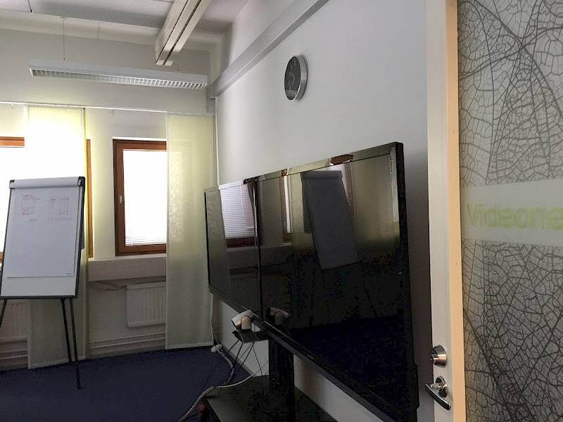
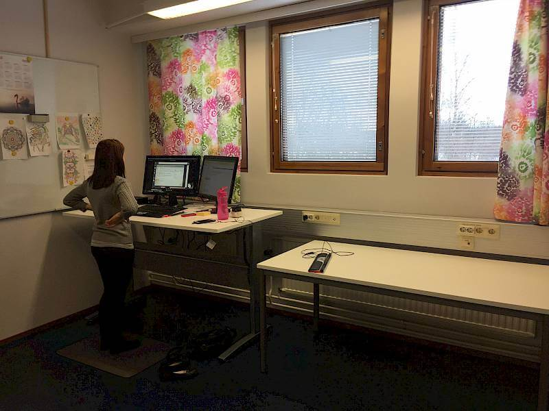
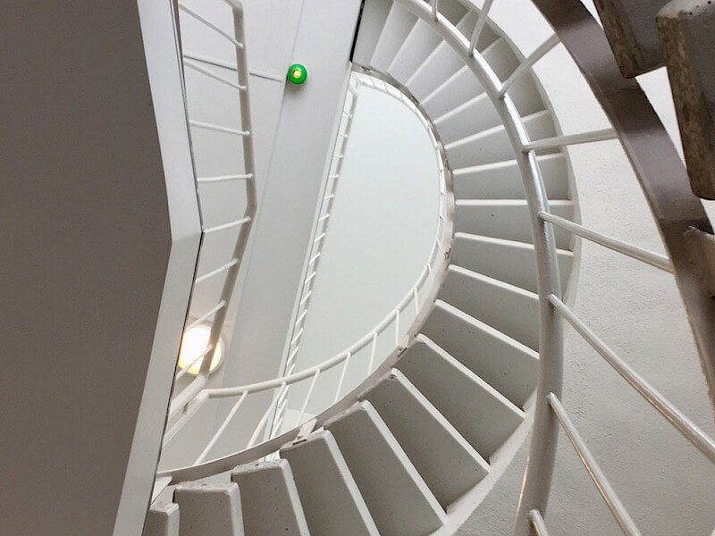

Matarankatu 2, 40100 Jyväskylä
info@toimistotalo.fi
Yhteistyössä
yrittajatalo.fi
Etusivu
Tietoja
Reittiohjeet
Kuvia
Yhteystiedot
Katso reittiohjeet
Kuvia
Katso kuvia rakennuksen tiloista, parkkihallista, autopaikoista ja muista tiloista. Klikkaa kuvia nähdäksesi ne suurempana ja saadaksesi paremman käsityksen tiloista.



Toteutetaan yrityksellesi tarpeittesi mukaiset toimitilat!
Ota yhteyttä
Soita 044-3872300
Close Cookie Popup
Sivustomme käyttää evästeitä
Käytämme evästeitä tarjotaksemme sinulle parhaan mahdollisen käyttökokemuksen sivustollamme. Jatkamalla sivustomme käyttöä hyväksyt evästeiden käytön.
Hyväksy ja jatka
Sulje ilmoitus